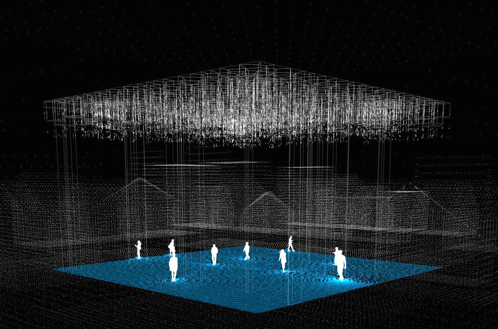
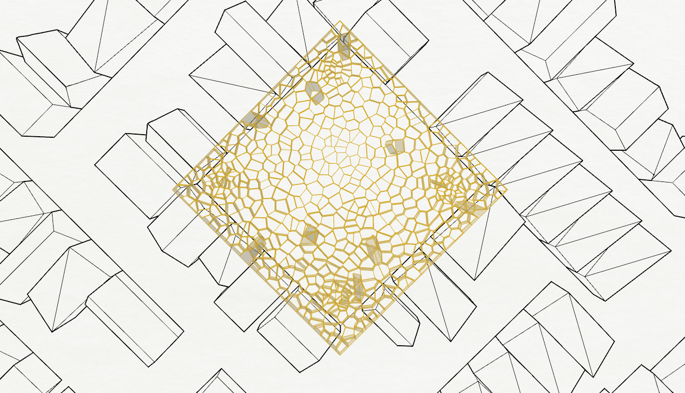
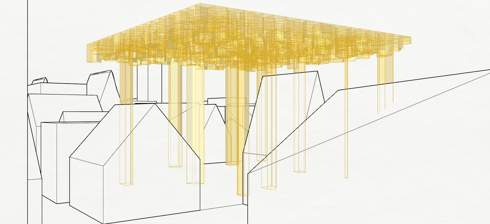

Wavy Square
As soon as a person enters a space, they begin to change it — the more people in a square, the louder, the warmer, the more alive it becomes. Wavy Square makes that influence visible.
Concept
A · The ideaThe possibility of interaction between people and urban space is always more engaging than its absence. Today a city street or square can become a place where people introduce new meanings, qualities and atmospheres. As soon as a person enters a space, they begin to change it — the more people in a square, the higher the noise level; and if one of them happens to be a street musician, the atmosphere around them can shift dramatically.
In this project I wanted to visualize the effect of a person's presence in an urban square, and show how strongly people influence one another when they share the same space. To do this, I designed a structure equipped with 3D scanners and projectors. It detects the position of each person beneath it and projects waves onto the surface of the square, radiating outward from every individual. A visual effect appears in the square, directly connected to the presence of people and the way they transform the space around them.
Interference
B · People affecting peopleThe waves generated by different people overlap, showing how people affect one another simply by being nearby. When the number of people in the square reaches a certain critical mass, the space itself begins to change more significantly. I tried to express this in the project too: when many people gather, the lighting of the structure changes, and water is released from cells inside the structure where it had been collected during rainfall.
In this way the square effectively transforms into a body of water, while above people's heads is a structure whose pattern resembles dry, cracked earth. Through this contrast I wanted to draw attention to the relationship between humans and the environment.
Studies
C · Renders, plan & context


Project Team
Albert Sumin
Method
Generative wave-interference model · Processing
Boids flocking · 3D-scanner & projector installation
Interaction
The square above is live — move, click, reach critical mass